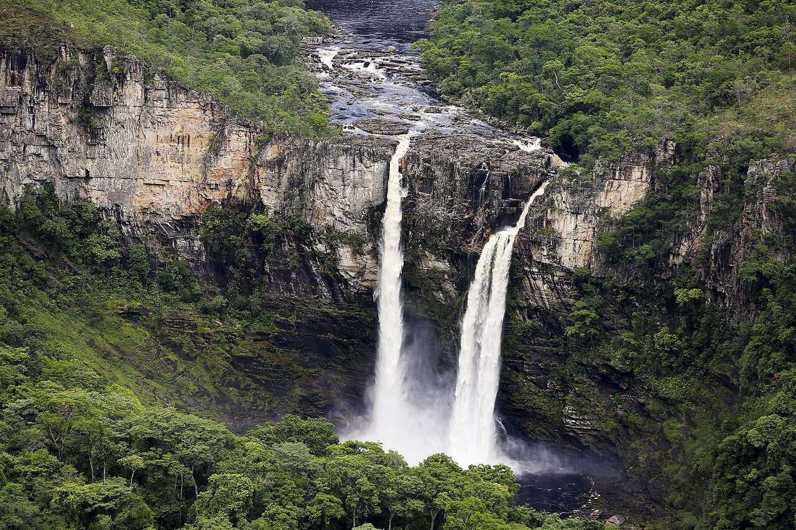
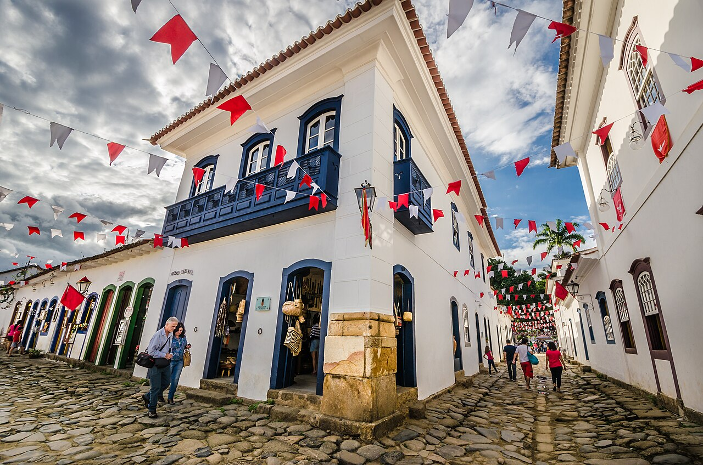
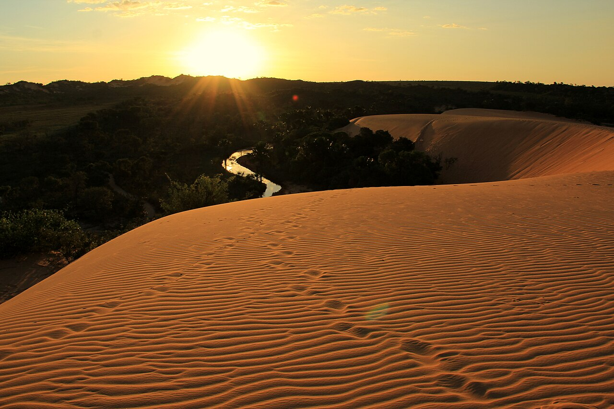

Três experiências para conhecer
Selecionamos lugares com propostas diferentes: aventura, história e paisagens únicas.
Chapada dos Veadeiros

Localizada em Goiás, a região possui trilhas, cânions, cachoeiras e paisagens do cerrado.
Paraty

A cidade combina casarões coloniais, ruas de pedra, praias e passeios de barco.
Jalapão

No Tocantins, o Jalapão chama atenção pelas dunas, fervedouros e longas estradas de terra.